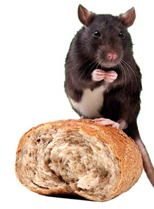

Apparently Remy from the Disney movie Ratatouille isn’t the only rat with a nose for chemical-free munchies. According to a recent article in The New York Times, Swiss and Austrian scientists offered 40 lab rats a choice between biscuits made with organically grown wheat and biscuits made with wheat that was grown through conventional methods. The rats showed a notable preference for the biscuits made with organic wheat. The experiment was part of a study on organic wheat production, and was intended as a supplemental, “integrative method” to measure the wheat’s quality. If rats avoid food produced with synthetic chemicals, shouldn’t we?
|
 ISTOCKPHOTO Rats prefer biscuits made with organic wheat. |
|
|